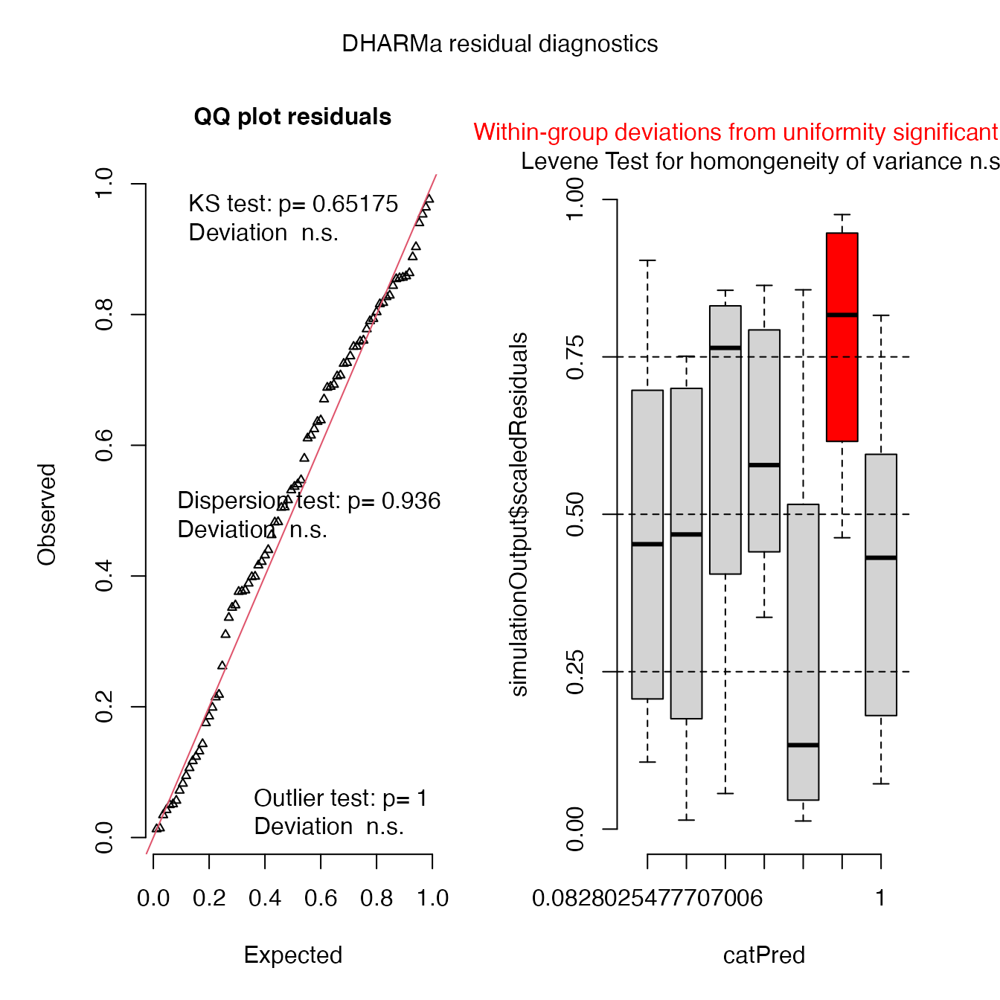
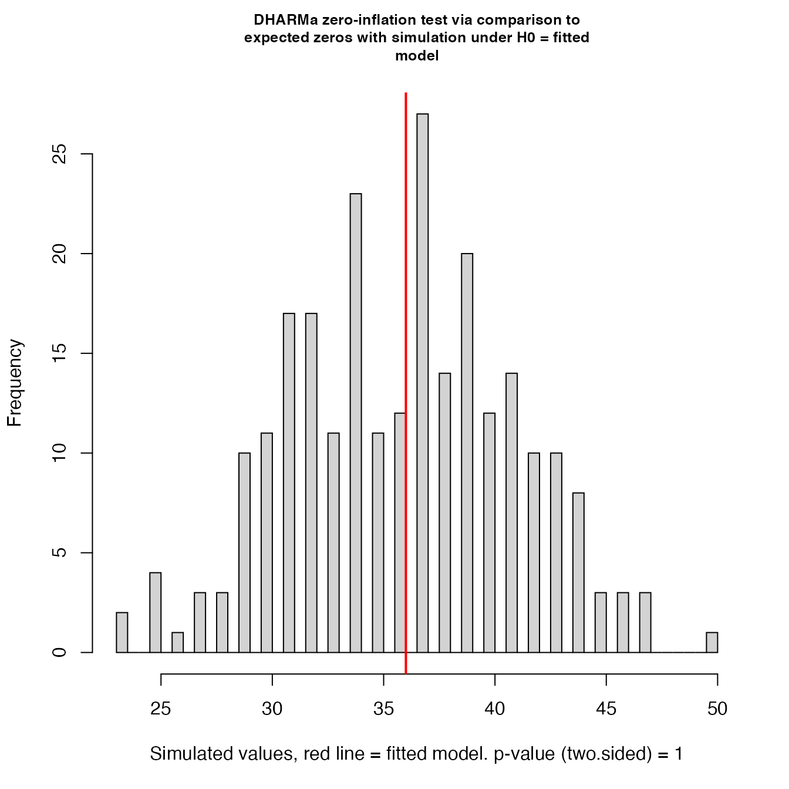

Fit GLMMs
29/04/2021
a01_Fit_GLMMs.RmdLoad libraries
library("readxl")
library("tidyverse")
library("dplyr")
library("SDMTools")
library("glmmTMB")
library("DHARMa")
library("ggeffects")
library("here")
library("gridExtra")Import data
dat <-
read_excel(system.file(
"extdata",
"lesion_weather_data.xlsx",
package = "rainy"),
sheet = 1,
na = "NA"
) %>%
group_by(rainfall_event) %>%
mutate(wind_direction=circular.averaging(wind_direction)) %>%
mutate(rainfall_event = as.factor(rainfall_event)) %>%
mutate(total_lesions = as.integer(total_lesions)) Use set.seed() for reproducibility purposes
set.seed(42)Model_1 (All variables)
Include all variables with rainfall event as a random effect
mod1 <-
glmmTMB(
total_lesions ~ total_rain + rain_duration + relative_humidity + temp + wind_speed + wind_direction + (1|rainfall_event), family = nbinom1,
data = dat
)## Warning in (function (start, objective, gradient = NULL, hessian = NULL, : NA/
## NaN function evaluation## Warning in fitTMB(TMBStruc): Model convergence problem; non-positive-definite
## Hessian matrix. See vignette('troubleshooting')
summary(mod1)## Family: nbinom1 ( log )
## Formula:
## total_lesions ~ total_rain + rain_duration + relative_humidity +
## temp + wind_speed + wind_direction + (1 | rainfall_event)
## Data: dat
##
## AIC BIC logLik deviance df.resid
## NA NA NA NA 75
##
## Random effects:
##
## Conditional model:
## Groups Name Variance Std.Dev.
## rainfall_event (Intercept) 3.631e-18 1.905e-09
## Number of obs: 84, groups: rainfall_event, 7
##
## Dispersion parameter for nbinom1 family (): 12.4
##
## Conditional model:
## Estimate Std. Error z value Pr(>|z|)
## (Intercept) 5.45115 NA NA NA
## total_rain 1.21681 NA NA NA
## rain_duration -0.68361 NA NA NA
## relative_humidity 0.05549 NA NA NA
## temp -0.24326 NA NA NA
## wind_speed -0.01685 NA NA NA
## wind_direction -0.07448 NA NA NAThe model summary suggest that there are not enough degrees of freedom to fit a complicated model. We can drop relative humidity and temperature because we directly transferred plants to a controlled environment with 20 degree celcius temperature and 100 % RH
Model_2
Drop relative humidity and temperature
mod2 <-
glmmTMB(
total_lesions ~ total_rain + rain_duration + wind_speed + wind_direction + (1|rainfall_event), family = nbinom1,
data = dat
)## Warning in (function (start, objective, gradient = NULL, hessian = NULL, : NA/
## NaN function evaluation
summary(mod2)## Family: nbinom1 ( log )
## Formula:
## total_lesions ~ total_rain + rain_duration + wind_speed + wind_direction +
## (1 | rainfall_event)
## Data: dat
##
## AIC BIC logLik deviance df.resid
## 423.7 440.7 -204.9 409.7 77
##
## Random effects:
##
## Conditional model:
## Groups Name Variance Std.Dev.
## rainfall_event (Intercept) 3.272e-10 1.809e-05
## Number of obs: 84, groups: rainfall_event, 7
##
## Dispersion parameter for nbinom1 family (): 12.4
##
## Conditional model:
## Estimate Std. Error z value Pr(>|z|)
## (Intercept) 2.79731 2.14735 1.303 0.192683
## total_rain 1.25025 0.25086 4.984 6.24e-07 ***
## rain_duration -0.58363 0.17271 -3.379 0.000727 ***
## wind_speed 0.23146 0.52189 0.443 0.657409
## wind_direction -0.06194 0.01477 -4.194 2.75e-05 ***
## ---
## Signif. codes: 0 '***' 0.001 '**' 0.01 '*' 0.05 '.' 0.1 ' ' 1We can see that model has been successful converged. But getting a warning message
Model_3
Remove wind speed as it is not significant
mod3 <-
glmmTMB(
total_lesions ~ total_rain + rain_duration + wind_direction + (1|rainfall_event), family = nbinom1,
data = dat
)## Warning in (function (start, objective, gradient = NULL, hessian = NULL, : NA/
## NaN function evaluation
summary(mod3)## Family: nbinom1 ( log )
## Formula:
## total_lesions ~ total_rain + rain_duration + wind_direction +
## (1 | rainfall_event)
## Data: dat
##
## AIC BIC logLik deviance df.resid
## 421.9 436.5 -205.0 409.9 78
##
## Random effects:
##
## Conditional model:
## Groups Name Variance Std.Dev.
## rainfall_event (Intercept) 3.908e-10 1.977e-05
## Number of obs: 84, groups: rainfall_event, 7
##
## Dispersion parameter for nbinom1 family (): 12.4
##
## Conditional model:
## Estimate Std. Error z value Pr(>|z|)
## (Intercept) 3.69530 0.77295 4.781 1.75e-06 ***
## total_rain 1.22102 0.22986 5.312 1.08e-07 ***
## rain_duration -0.61149 0.16364 -3.737 0.000186 ***
## wind_direction -0.06006 0.01340 -4.483 7.36e-06 ***
## ---
## Signif. codes: 0 '***' 0.001 '**' 0.01 '*' 0.05 '.' 0.1 ' ' 1Again getting a warning message. And the negative impact of increasing rain duration and wind direction does not make any biological sense
Model_4
Replace wind direction with wind speed if the warning message could be removed
mod4 <-
glmmTMB(
total_lesions ~ total_rain + rain_duration + wind_speed + (1|rainfall_event), family = nbinom1,
data = dat
)
summary(mod4)## Family: nbinom1 ( log )
## Formula:
## total_lesions ~ total_rain + rain_duration + wind_speed + (1 |
## rainfall_event)
## Data: dat
##
## AIC BIC logLik deviance df.resid
## 437.6 452.2 -212.8 425.6 78
##
## Random effects:
##
## Conditional model:
## Groups Name Variance Std.Dev.
## rainfall_event (Intercept) 0.3831 0.6189
## Number of obs: 84, groups: rainfall_event, 7
##
## Dispersion parameter for nbinom1 family (): 13.6
##
## Conditional model:
## Estimate Std. Error z value Pr(>|z|)
## (Intercept) 3.64859 4.25615 0.857 0.3913
## total_rain 0.17941 0.08873 2.022 0.0432 *
## rain_duration 0.06674 0.27752 0.240 0.8100
## wind_speed -0.86102 0.95663 -0.900 0.3681
## ---
## Signif. codes: 0 '***' 0.001 '**' 0.01 '*' 0.05 '.' 0.1 ' ' 1The warning message has gone now. The reason is that wind direction did not vary much during different rainfall events, whereas wind speed varied. We can go with mod4
Best fit model mod4 diagnostics
Check over-dispersion
Check for over-dispersion using custom function created by Ben Bolker. Here is the link
overdisp_fun <- function(model) {
rdf <- df.residual(model)
rp <- residuals(model,type="pearson")
Pearson.chisq <- sum(rp^2)
prat <- Pearson.chisq/rdf
pval <- pchisq(Pearson.chisq, df=rdf, lower.tail=FALSE)
c(chisq=Pearson.chisq,ratio=prat,rdf=rdf,p=pval)
}
overdisp_fun(mod4)## chisq ratio rdf p
## 48.7848259 0.6254465 78.0000000 0.9961281The larger p value shows that there is no significant over-dispersion
Simulate residuals
simulateResiduals(mod4, plot = T, quantreg=T)
## Object of Class DHARMa with simulated residuals based on 250 simulations with refit = FALSE . See ?DHARMa::simulateResiduals for help.
##
## Scaled residual values: 0.6927872 0.7510566 0.6896901 0.7363081 0.5366913 0.0510442 0.3992562 0.7071509 0.2186215 0.3517035 0.01424899 0.1319637 0.7587712 0.8268785 0.8587292 0.4821805 0.6704474 0.8635588 0.3363587 0.6248903 ...Very close observed and predicted values
Check zero-inflation
testZeroInflation(mod4)
##
## DHARMa zero-inflation test via comparison to expected zeros with
## simulation under H0 = fitted model
##
## data: simulationOutput
## ratioObsSim = 1.0184, p-value = 1
## alternative hypothesis: two.sidedNo zero inflation detected
Check overall performance
performance::check_model(mod4, panel = FALSE)## Loading required namespace: qqplotr## For confidence bands, please install `qqplotr`.


The model fit non-linear model data distribution assumption, close observed vs. fitted values and there is no significant collinearity between predictors